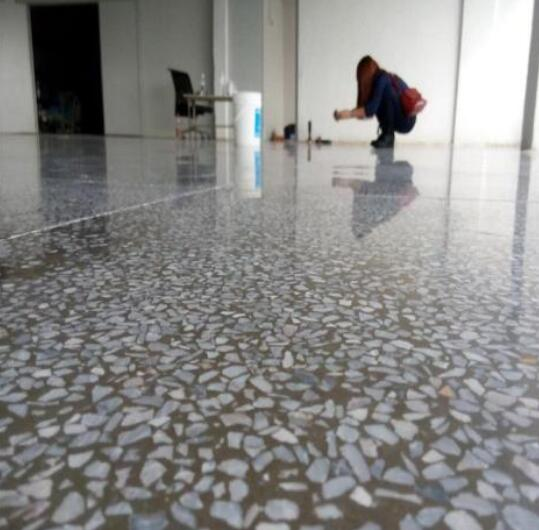

水磨石在80年代初就已经在市面上逐渐流通，这就导致很多年代久远的水磨石已经没有光泽，出现发白的迹象。如何让水磨石华丽转身？
现在流行的水磨石翻新办法分为：
-
1.使用水磨石地面翻新剂
-
2.水磨石研磨抛光工艺
水磨石地面翻剂的优点
-
1．防备泛白：通常的混凝地面，盐碱身分会从中析出，导致泛白等表观质量题目。水磨石地面翻新剂处置后混凝土表面形成一个结实、致密的整体、盐碱成份不会从中析出;
-
2．耐磨：它可以大概将混凝土中的成份固化成一个坚固的实体加硬度和密实度，地面熟化后，耐磨度将增加到8倍以上;
-
3.抗腐化性：水磨石地面翻新剂能制止氯离子的通过;水泥液体渗透硬化剂地坪耐腐化：经处置后的地面，将大大增长了混凝土的耐腐化性能。水晶渗硅处理剂硬化耐磨地坪，一经拥有、终生受用。
-
4.抗压：水磨石地面翻新剂能有用渗透的混凝土内，并与其产生化学反响，锁住内里的毛孔，对混凝土地面起到的密封结果，能有用克制水、油和别的污物进入混凝土内;
-
5.防尘：它与混凝土产生化学反响，在混凝土外貌形成一个无尘、致密的团体，永世控制了尘埃从混凝土中析出;
水磨石地面
水磨石研磨抛光工艺
粗磨
用水磨石翻新机将旧水磨石地面进行打磨，去除表面油污、空虚层，消除地面凹凸不平、坑洞等现象。
细磨
用水磨石翻新机、地面研磨机、金属磨轮对粗磨后水磨石地面进行打磨，消除粗磨痕迹，同时对过高的地面进行研磨整平，增加地面平整度。
修补
用水磨石地面修补砂浆对地面坑洞、裂缝(视情况开槽)、空虚处进行填补修复。地面研磨。用水磨石、地面研磨机、水磨石地面打磨片对地面做进一步研磨，由粗至细，直至达到实际要求。
施工操作程序
-
1.基层清理水磨石地面的空鼓，粘结不牢，很多是由于基层清理不够，有影响粘结的杂物造成。所以，在工序安排上，应将清理基层作为一道工序完成
-
2.水泥砂浆稠度要适当，搅拌要均匀，现场分堆搅拌，人工拌合，就地分摊的办法不宜提倡。如果有排水坡度要求，特别要注意泛水的走向及地漏的位置与标高，在找平层施工中应准确完成。
-
3.注意检查结构的质量情况，如楼板的裂缝问题。在近年来的水磨石地面中，经常因楼板裂缝而影响水磨石面层(其他面层也会遇到类似情况)。需要处理的裂缝最好在找平层施工前处理完毕，如果在面层做好后再去处理，势必影响面层色彩的整体性及造成接槎的痕迹。
-
4.对于经常流水的地面，如卫生间、厨房等地面，还需注意地漏的抹口及穿楼板洞的堵洞工作，因为这些部位一旦渗透水，一定要返修。返修就要破坏局部面层，虽然可以修复，但前后施工的接槎，是比较明显的。找平层施工完毕，24小时后应洒水养护，养护2～3天，即可做面层施工。
-
- 浇筑到事先制作好的分隔条内，待强度达到后通过研磨、打蜡抛光而成。水磨石地面经过多年使用，有些水磨石地面已经明显渗脏，污痕累累，让人无法忍受，这就需要通过新的技术对其进行翻新改造，让破旧的水磨石地面重新焕发光彩。
上海五美是专业的上海保洁公司，提供写字楼保洁、大型综合商场保洁、工厂保洁、学校保洁、小区保洁、别墅区保洁、办公室保洁、大型游乐园保洁、开荒保洁、大理石翻新和养护、地毯清洗、水箱清洗、地面清洁、外墙清洗、物业管理、日常保洁外包等。欢迎广大新老客户前来咨询！
- 